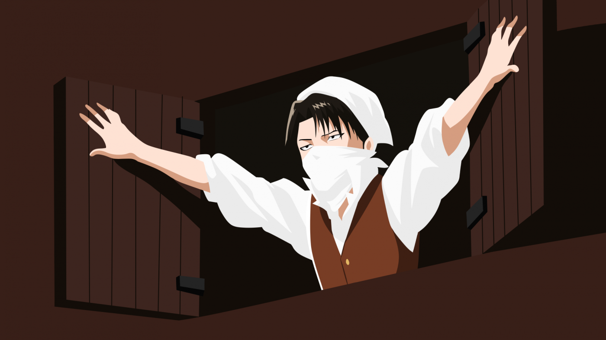

Levi Ackerman es el capitán del escuadrón del escuadrón de operaciones especiales del Cuerpo de Exploración, y es conocido como "el soldado más fuerte de la humanidad".
Es una persona seria, de carácter firme e ideas claras. Siente un gran respeto por la disciplina y es un soldado con un enorme potencial para ser líder, pues sus órdenes siempre son claras y precisas, sin que nadie se atreva a cuestionar su autoridad. Su seriedad y frialdad transmite ese tipo de respeto, sobre todo este primer factor, siendo alguien de pocas palabras y que muy rara vez expresa sus sentimientos. Sabe perfectamente la responsabilidad que conlleva manejar a un grupo de soldados, y que según cómo sean sus órdenes puede llevar a esos soldados a una muerte segura.
Posee un tamaño pequeño, pero a pesar de ello, muestra la mente y madurez de un adulto, así como la astucia propia de un soldado que ha pasado por todo tipo de penurias. Es fácil hacerle enfadar, pero muy difícil que se enfurezca hasta el punto de perder los estribos. Tiene la paciencia justa y siempre parece tener una palabra para cada situación.
Levi es un genio en el uso de las Maniobra Tridimensionales. Muchos civiles han comentado que él es tan poderoso como 100 soldados juntos. A diferencia de los otros soldados, él utiliza sus dos sables de una forma diferente a la tradicional, el de la izquierda apunta hacia arriba y el de la derecha hacia abajo formando una circunferencia completa que se posiciona diagonalmente, lo que al impulsarse con el gas y girar, le permite atinar múltiples cortes efectivos a su objetivo a gran velocidad.
Además de sus grandes habilidades con el Equipo de Maniobras Tridimensionales, a él se le considera un genio; alguien que sabe tomar decisiones bajo presión y no decaer en el pánico, capaz de analizar la situación y encontrar una solución que en varias ocasiones los han salvado de peligros a él y sus compañeros. También ostenta una gran capacidad mental y firme.
Al igual que Mikasa, también pertenece al linaje de la familia Akerman, por lo que posee habilidades y consecuencias similares a las de ella. Levi describe esta habilidad como "saber exactamente lo que se debe hacer".
Hay ocasiones en las que un Ackerman con el poder despertado puede experimentar dolores de cabeza repentinos, esto se debe a que "su verdadero yo" intenta resistirse al instinto Ackerman de proteger a un anfitrión.
